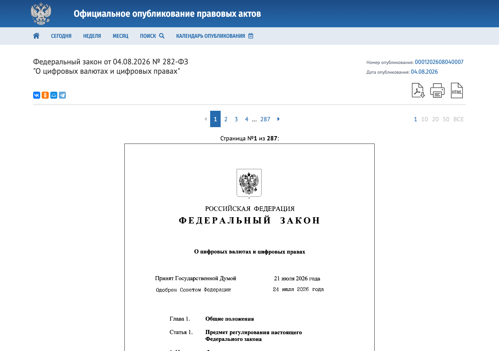
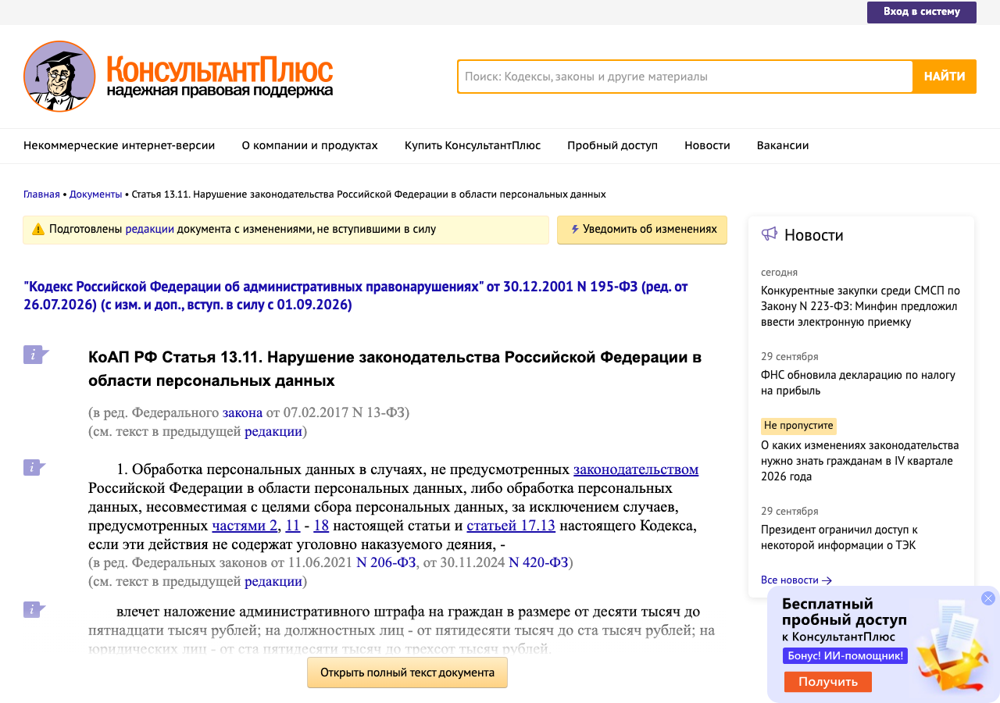

Справочник «Право IT-проекта в России» · модуль 1 · Как устроена ответственность
Глава 1.2
Как найти
и прочитать норму
Пересказ закона в статье блога или в ролике удобен, но в нём легко потерять условие, перепутать номер статьи или взять устаревшую сумму штрафа. В главе разобрано, где лежит официальный текст, как проверить, что редакция действует, и как устроена статья закона.
- Источники
- publication.pravo.gov.ru · КонсультантПлюс · СОЗД Госдумы
- Уровень
- Базовый
- Связанные главы
- 1.1 Ответственность · 1.3 Надзор
- Зачем это знать
- Чтобы ссылаться на действующую редакцию нормы
§1Иерархия: от Конституции до приказа
Правила для IT-проекта записаны в документах разного уровня. Документ нижнего уровня не может противоречить верхнему. Для практики важно знать, где искать подробности: закон задаёт обязанность, а как её выполнять, часто написано в постановлении Правительства или приказе ведомства.
Письма и разъяснения ведомств на сайтах — например, ответы Роскомнадзора на частые вопросы — нормативными актами не являются. Они показывают позицию проверяющего органа, и с ней полезно считаться, но оспаривают постановление о штрафе по тексту закона.
§2Официальный текст
Закон вступает в силу только после официального опубликования. Главный источник — портал официального опубликования правовых актов publication.pravo.gov.ru. На нём закон появляется в день подписания в виде скана подписанного документа с номером опубликования.

Скан отражает закон в момент принятия. Если закон потом меняли, изменения опубликованы отдельными законами, и собрать действующий текст из скана и десятка поправок вручную трудно. Поэтому для работы используют справочные правовые системы, в которых действующий текст уже собран: КонсультантПлюс и Гарант. У обеих есть бесплатные интернет-версии основных кодексов и законов.
§3Действующая редакция
Редакция — текст закона со всеми изменениями на определённую дату. Одна статья может иметь три редакции одновременно: прежнюю, действующую и будущую, которая уже принята, но ещё не вступила в силу.

Ответственность наступает по закону, действовавшему во время нарушения. Если закон смягчил ответственность, применяется новый, более мягкий (ст. 1.7 КоАП, ст. 10 УК). Поэтому при разборе случая сначала выясняют дату нарушения, потом открывают редакцию на эту дату.
§4Из чего состоит статья
Статья закона делится на части, части — на пункты, пункты — на подпункты. Части нумеруются цифрой с точкой (1., 2., 3.1.), пункты — цифрой со скобкой (1), 2)), подпункты — буквой (а), б)). В Налоговом кодексе порядок другой: статья делится на пункты, пункты — на подпункты.
| Как пишется ссылка | Что означает | Пример |
|---|---|---|
ч. 3.1 ст. 21 | Часть 3.1 статьи 21 | Уведомление Роскомнадзора об утечке за 24 и 72 часа (152-ФЗ) |
п. 5 ч. 1 ст. 6 | Пункт 5 части 1 статьи 6 | Обработка персональных данных для исполнения договора |
пп. 26 п. 2 ст. 149 | Подпункт 26 пункта 2 статьи 149 (НК РФ) | Льгота по НДС для ПО из реестра |
ч. 10.7 ст. 5 | Часть 10.7 статьи 5 | Запрет рекламы на ресурсах экстремистских организаций (38-ФЗ) |
Дробный номер (3.1, 10.7, 272.1) означает, что часть или статью вставили позже, не меняя нумерацию остальных. По дробному номеру видно, что норма относительно новая, и её стоит проверить особенно внимательно.
Три элемента нормы
В статье об ответственности различают три элемента. Гипотеза — условия, при которых норма применяется. Диспозиция — само правило или описание нарушения. Санкция — последствия нарушения. В КоАП и УК гипотеза и диспозиция обычно слиты в одно описание, а санкция начинается со слов «влечёт» или «наказывается».
КоАП РФст. 13.11, ч. 11ред. от 26.07.2026Невыполнение или несвоевременное выполнение оператором предусмотренной законодательством Российской Федерации в области персональных данных обязанности по уведомлению уполномоченного органа по защите прав субъектов персональных данных в случае установления факта неправомерной или случайной передачи (предоставления, распространения, доступа) персональных данных, повлекшей нарушение прав субъектов персональных данных, -
влечет наложение административного штрафа на граждан в размере от пятидесяти тысяч до ста тысяч рублей; на должностных лиц - от четырехсот тысяч до восьмисот тысяч рублей; на юридических лиц - от одного миллиона до трех миллионов рублей.
Здесь диспозиция отсылает к другому закону: сама обязанность уведомить («в течение 24 часов») записана в ч. 3.1 ст. 21 закона 152-ФЗ. Такая норма называется бланкетной. Чтобы понять, что нарушено, открывают обе статьи: в КоАП — наказание, в профильном законе — обязанность.
§5Законопроекты и будущие нормы
О новых правилах часто пишут, пока они ещё законопроект. Статус законопроекта проверяют в системе обеспечения законодательной деятельности Госдумы — sozd.duma.gov.ru. На странице законопроекта видно, в каком он чтении, какие поправки приняты и когда закон подписан.
- Текст и пояснительная записка. Нормы в этом виде ещё не действуют и могут сильно измениться.
- Дума одобряет концепцию. Поправки ещё возможны.
- Принимается окончательный текст. Закон о цифровых валютах прошёл их 21 июля 2026 года.
- Одобрение и подписание Президентом. 282-ФЗ подписан 4 августа 2026 года.
- Дата указана в самом законе, часто разная для разных статей: у 282-ФЗ — 1 сентября 2026 года, часть норм — с 1 июля 2027 года.
§6Почему пересказ расходится с текстом
При подготовке справочника пересказы из интернета сверялись с текстом законов. Ниже — расхождения, найденные при этой сверке. Они типичны и показывают, что проверять.
| Что утверждал пересказ | Что в тексте закона | Тип ошибки |
|---|---|---|
| Требование авторизоваться по российскому номеру телефона — в «статье 10.6» закона 149-ФЗ | Требование в ч. 10 ст. 8 закона 149-ФЗ; ст. 10.6 посвящена социальным сетям | неверный номер статьи |
| Порог крупного размера по ст. 146 УК — 100 тыс. ₽ | Примечание к ст. 146: крупный размер — свыше 500 тыс. ₽, особо крупный — свыше 2 млн ₽ | устаревшая сумма |
| Незаконное предпринимательство по ст. 171 УК — при «доходе в крупном размере» | Действующая ч. 1 ст. 171 говорит о причинении крупного ущерба | прежняя редакция |
| Закон 168-ФЗ «обязывает русифицировать сайты» и «запрещает списывать подписку с отвязанной карты» | В законе пять статей; ст. 1 добавляет ст. 10.1 о вывесках и информации для публичного ознакомления. Норма о подписках есть, но в другом законе — 376-ФЗ от 15.10.2025 (п. 4.2 ст. 16.1 закона о защите прав потребителей) | смешение двух законов |
| Любое упоминание Instagram требует пометки об экстремизме | Обязанность пометки установлена для СМИ; для остальных — это практика осторожности | обобщение |
§7Частые ошибки
§8Проверьте себя
- Чем скан закона на портале официального опубликования отличается от текста в КонсультантПлюс?
- Что означают строки «ред. от 26.07.2026» и «Подготовлены редакции документа с изменениями, не вступившими в силу»?
- Расшифруйте ссылку «п. 5 ч. 1 ст. 6 152-ФЗ».
- Что такое бланкетная норма? Покажите это на ч. 11 ст. 13.11 КоАП.
- Как узнать, принят ли закон, о котором пишут в новостях, и с какой даты он действует?
- Нарушение совершено в марте, а в июле ответственность за него смягчили. По какой редакции назначат наказание?
publication.pravo.gov.ru — официальный текстconsultant.ru — действующая редакцияsozd.duma.gov.ru — законопроектч. — часть (1.)п. — пункт (1))пп. — подпункт (а))НК: пункт → подпунктгипотеза — когдадиспозиция — чтосанкция — чем грозитбланкетная — отсылает к законуномер статьидата редакциидата вступления в силусвязанная статьяСправочник «Право IT-проекта в России» · модуль 1 · глава 1.2Макаров Максим Николаевич